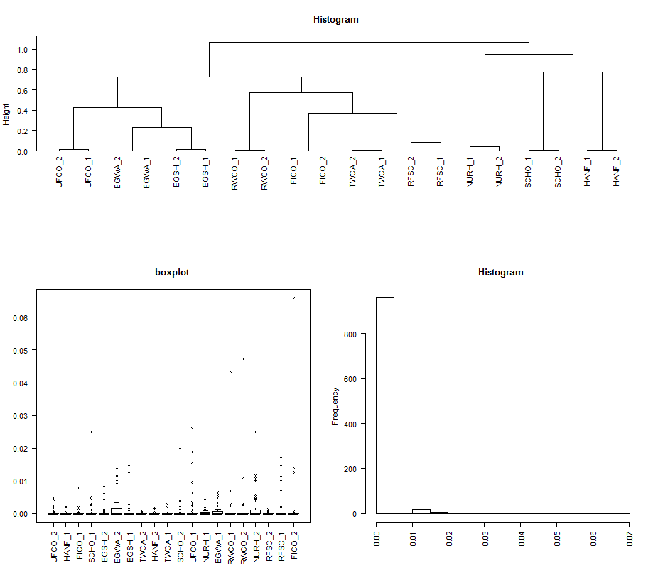

Food Scraps Resistome Project
Exploring resistome metagenomics with R using made4 package
John Barlow and Korin Eckstrom
- Email: john.barlow@uvm.edu
Background
We recently collected shotgun metagenomics data from multiple sources on a poultry farm feeding post-consumer food waste to their chickens. The farm collects food waste from various sources (hospital and school cafeterias, nursing homes, restaurants, grocery stores) and feeds the pooled food scraps to chickens. After the chickens feed on the food scraps the waste material enters a composting stream, and the processed compost is used for vermi-culture and the final product is sold commercially.

cartoon map of sample sites and food scraps flow across farm

Our primary objective was to characterize the presence of antimicrobial resistance genes in the food scraps and waste material across the farm system. We used culture-based and culture-independent (shotgun metagenomics) methods to identify antibiotic resistant organisms and genes in samples collected from the farm. We sampled across 13 locations (sites) within the system (farm and sources), including food scraps at their original source, food scraps as fed to chickens, eggs from the chickens, compost material at various stages, material in various stages of vermi-culture, and final worm castings available for commercial sale.
A secondary objective was to explore the patterns types of microbial genes identified by shotgun metagenomics sequencing in the samples collected from this farm.
A challenge with these data is that there are large numbers of genes (i.e. variables observed, or gene observations) compared to the number of samples (e.g. sample sites), and that we generate separate tables of observed genes from alignment queries to different reference databases. We propose that this is analogous to gene expression data (e.g. microarray data) obtained across different microarray platforms. Further the data contains many “0” observations, where a gene is not observed in a particular sample (graphically explored using the attached R code).
Data structure
The data from the shotgun metagenomics study are 3 separate dataframes, each with 20 identical columns representing the collection sites and a variable number of rows representing the observed genes. The elements in the data are relative abundance measures in gene counts from the metagenomic sequencing runs. At this time we are treating the replicates of metagenomic runs from each site separately (although we know they are not independent), thus there are 26 sites (13 sites with 2 metagenomic runs per site). There were 3 sites where we found no ARGs and these are later removed for co-inertia analysis between the data.frames.
ARG histo by Site - created using gather function of tidyr
Data Files
there are 3 data files needed for the made4 demo
ARG data res_mat_abun.csv
Bacterial Taxa data bac_mat_abun.csv
Virulence gene data vf_mat_abun.csv
Code
The made4 function overview() will generate a boxplot, histogram, and dendrogram of the data elements. This seems to be good for a quick look at the data. There are few arguments in the functure to enhance the graphics display. Here is the output from running overview on the cleaned ARG abundance data file “res_mat2” 